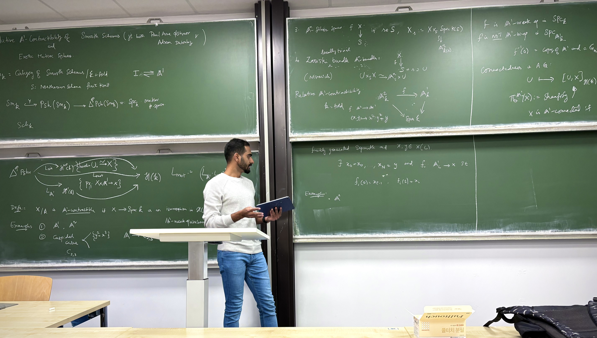

Krishna Kumar M.V.
Hey there! I am a doctoral student in Mathematics advised by Paul Arne Østvær in Italy and Adrien Dubouloz in France. Previously, I was an ALGANT Master dually between Regensburg and Milan. Even prior to this, I was an Integrated Master at Pondicherry University in India.Currently, I am in the postdoctoral job market!

50 Via Cesare Saldini, #2065, 20133 Milan, IT 7 Avenue Alain Savary, Bâtiment Mirande (IMB) #212, 21000 Dijon, FR
krishna(dot)madhavan(at)unimi(dot)it | krishna(dot)madhavan(at)ube(dot)fr